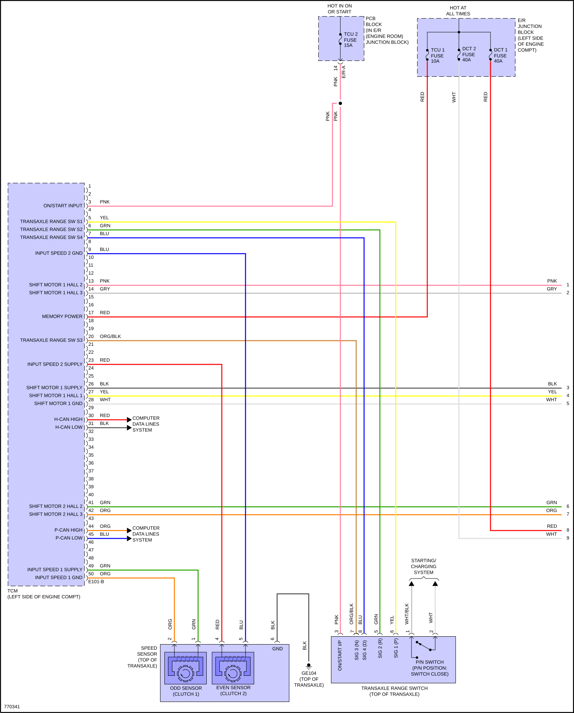
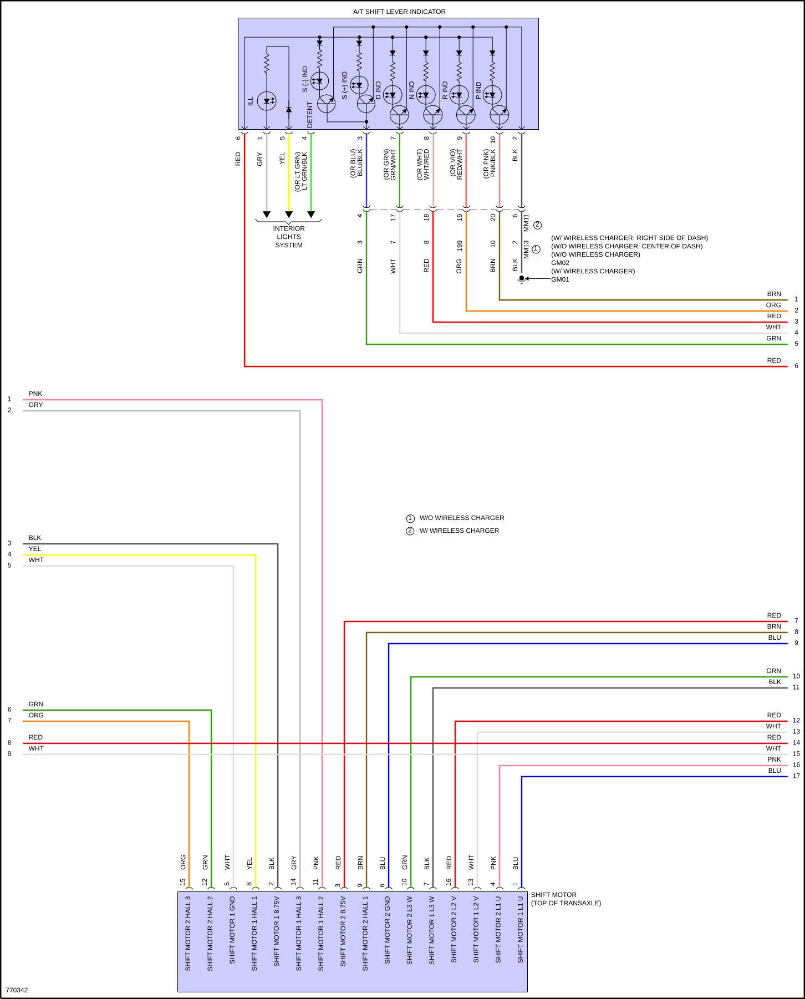
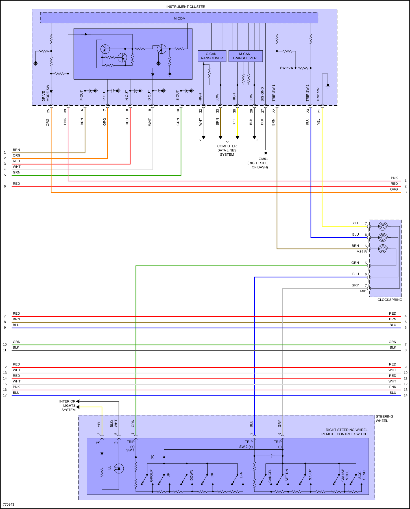
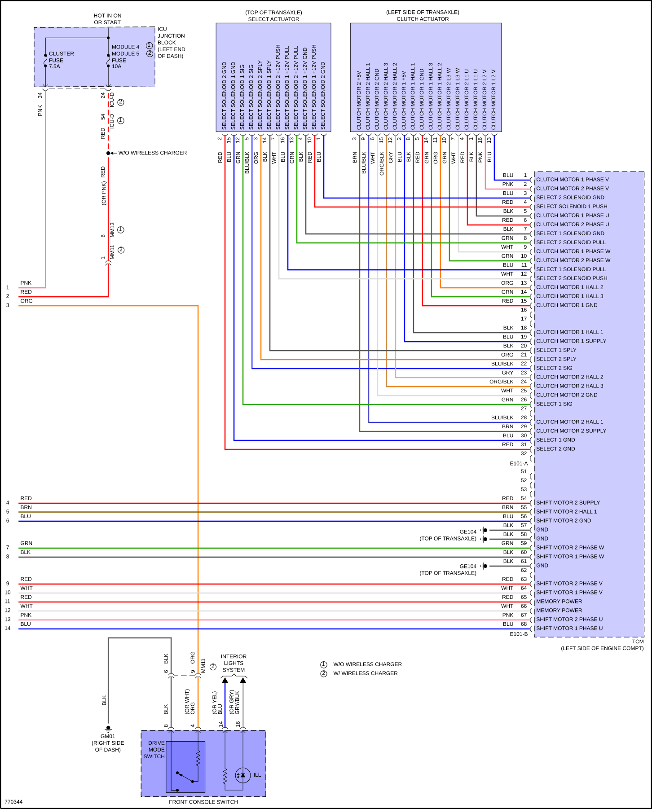

LEMON Manuals
: Even more car manuals for everyone: 1960-2025
Home
>>
Hyundai
>>
2022
>>
Elantra N Line, Standard Trans
>>
Repair and Diagnosis (Single Page)
>>
Quick Lookups
>>
Wiring Diagrams
>>
System Wiring Diagrams
>>
Transmission
>>
1.6L Hybrid
1.6L Hybrid
Fig 1: 1.6L Hybrid, Transmission Circuit (1 of 4)

Fig 2: 1.6L Hybrid, Transmission Circuit (2 of 4)

Fig 3: 1.6L Hybrid, Transmission Circuit (3 of 4)

Fig 4: 1.6L Hybrid, Transmission Circuit (4 of 4)
